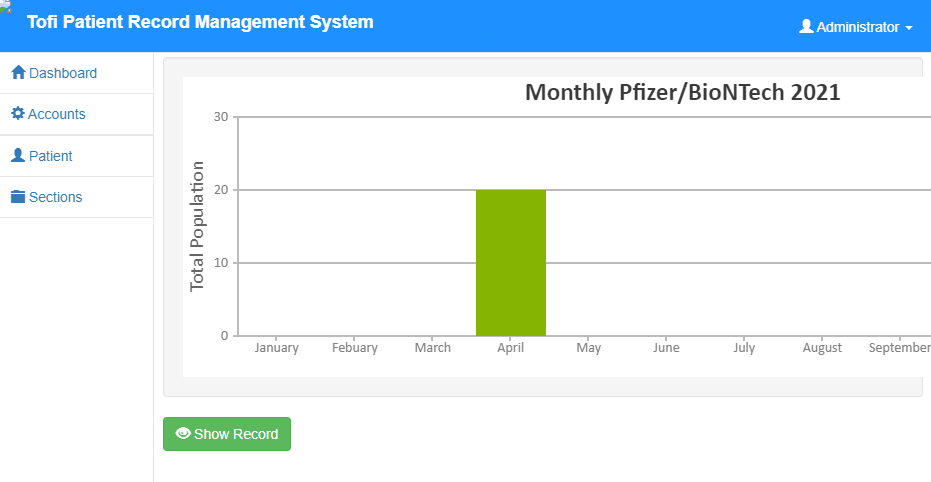
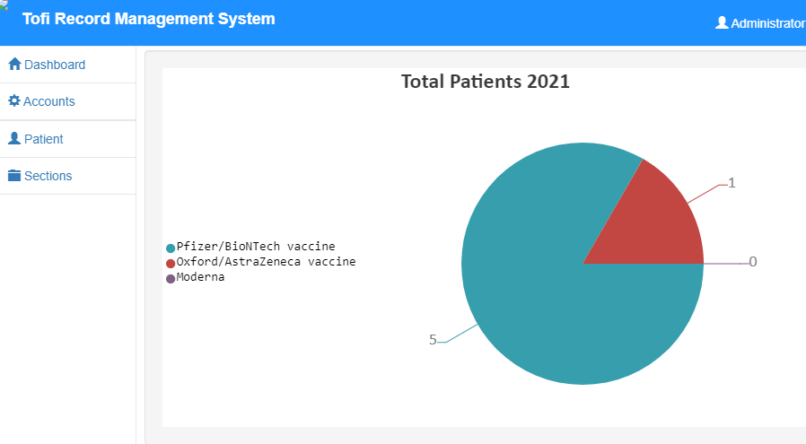
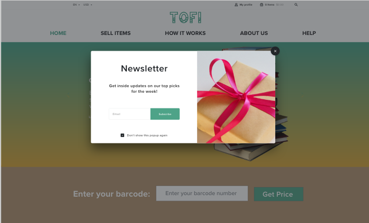
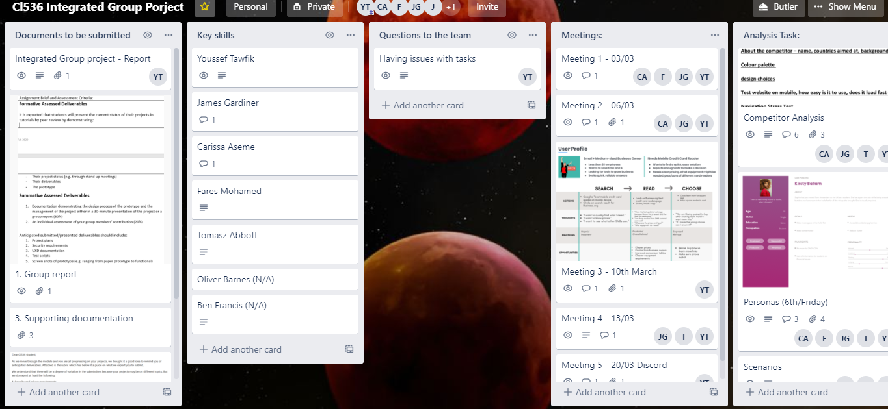
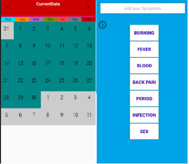
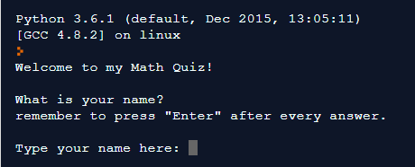
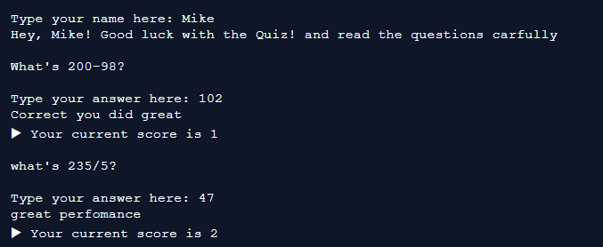
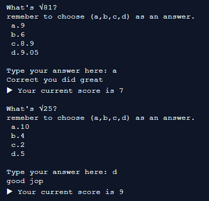
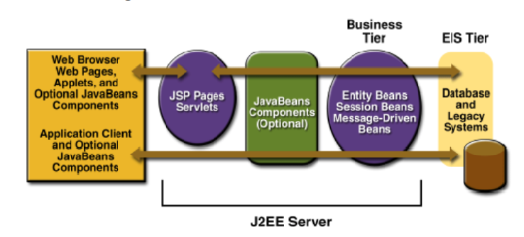

• Web based application built on frameworks of PHP and MySQL database
• Administration / User Login directs to records saved about the last patient
vaccinated as an example and allows the user to download the official
documentation data to use later in travel or personal use.
• Using agile approach for each step taken in development and estimations on when
the project will be delivered.
• Iso Metric, Product reaction card was used to test the application




Tofi is a free online service that reads or scans barcodes on Books, CD’s, DVD’s, and games to
determine their current market value. Users input or scan their “International Standard Book
Number” or their “European Article Number” into the system to get a quote on how much the
company is willing to purchase the specific item for. It is a buy and sell company so the
business is quite cost intensive and making profits can be challenging.

Back Ground Investigation of M-Learning Blackboard, Methodology and data collection of research and Critiques on techniques used. Using three methods (Iso Metric Questionnaire, Product reaction card and SUS Score) to test three tasks given to three students. Tasks are: Accessing Assessment, Accessing Timetable and Accessing Grades.

a Haskell program that will be used to solve Sudoku, the well-known logical puzzle from Japan. Sudoku is a logic puzzle from Japan which gained popularity in the West during the 90s. Most newspapers now publish a Sudoku puzzle for the readers to solve every day.
A Sudoku puzzle consists of a 9x9 grid. Some of the cells in the grid have digits (from 1 to 9), others are blank. The objective of the puzzle is to fill in the blank cells with digits from 1 to 9, in such a way that every row, every column and every 3x3 block has exactly one occurrence of each digit 1 to 9.

MedJournal is a medical application for men and women, it includes a calendar which shows days of the month. The user can interact with any day of the month to be presented with symptoms buttons which can be added to any specific day of the month. If the user is experiencing any other symptoms which aren’t one of the available options, The new symptom can be added by a text menu which is located on top of the screen when you press on any days of the month.

Breakout game is a classic arcade game which consists of a bat, bricks and a ball they all come in different shapes, sizes and colors.
In Breakout it begins with layer of bricks in top of the screen, it can be different row of bricks depends on difficulty and the level. the goal is to destroy all the bricks. A ball moves around the screen bouncing of two sides in the screen and you try to hit it with the bat which is located at the bottom of the screen. When the player hits the brick with the ball the brick disappears, for each brick the player hits he gains 50 points. if the ball goes down to the bottom the player loses a live, each game the player has certain amount of lives usually it starts from “10 lives”. if the ball goes hits the bottom 10 times it will result in losing the game.

Using materials from National Cyber security website. I created a website which introduces important studies for secondary school students. The website gives information about Cyber security, network security and understanding security mechanisms.



The game contains different Multiple choice questions with different comments for each time the user answers with an overall score at the end. There is also different features such as time and speed of the interaction.

Java EE components are assembled into a JavaEEapplication. Verified to be well formed and in compliance with the J2EE specification. Deployed to production, where they are run and managed by the J2EE server. A Java EE client is a Web client or an application client.
The following is a demo demonstrating my work using Java EE container,
Java Servlets, JSP, JSP framework, Java Server faces, HTML, XHTML, Maven, XML,
Java Persistence API & Enterprise Java beans in linux terminal.